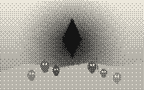

The Claylings
Colonie et défense en temps réel : des agents d'argile autonomes pilotés par machine à états, 13 traits de personnalité, météo dynamique, chaîne d'artisanat, escouades en formation et monde généré procéduralement.
Voir le dépôt